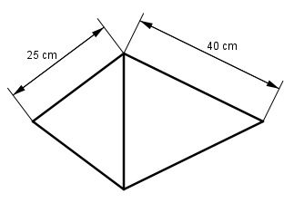

Aufgabe 219 Das dargestellte Werkstück (2 Kegel) besteht aus 2 mm dickem Blech, Dichte 7,85 kg/dm³ und hat an der Nahtstelle einen Umfang von 1,2 m. Wie schwer ist das fertige Teil?  Radius r an der Nahtstelle: U = 2 * л * r | : 2 * л U ------ = r 2 * л U = 1,2 m = 120 cm 120 cm r = --------- = 19,12 cm 2 * л M = л * 19,12 cm * 25 cm + л * 19,12 cm * 40 cm M = 1 507 cm² + 2 401 cm² = 3 908 cm² Dicke 2 mm = 0,2 cm V = M * 0,2 cm = 3 908 cm² * 0,2 cm = 781,6 cm³ р = 7,85 kg/dm³ = 7,85 g/cm³ m = V * р = 781,6 cm³ * 7,85 g/cm³ = 6 135 g = 6,14 kg